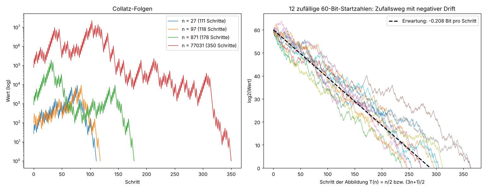
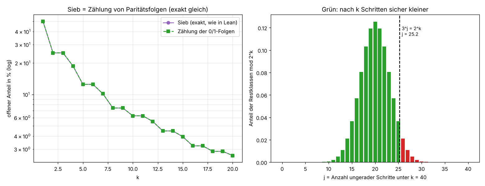
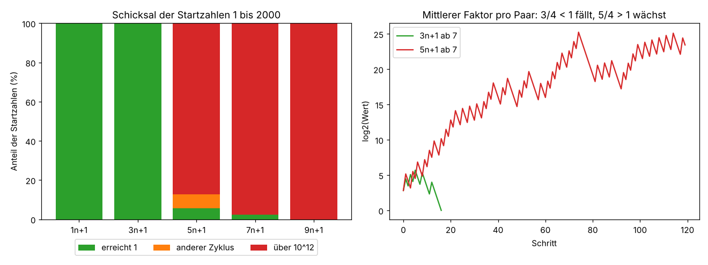

Nimm eine positive ganze Zahl. Ist sie gerade, halbiere sie. Ist sie ungerade, rechne $3n+1$. Wiederhole. Landet man immer bei 1?
$$T(n)=\begin{cases} n/2 & n \text{ gerade}\\ 3n+1 & n \text{ ungerade}\end{cases}$$
offen Die Vermutung ist unbewiesen. Diese Seite sammelt, was wir mit Python-Experimenten und Lean-Beweisen tatsächlich herausgefunden und bewiesen haben, und sagt klar, was offen bleibt.
Auf einen Blick
Was in Lean formal bewiesen ist (ohne sorry, jede Zeile vom Computer geprüft):
Alle Zahlen unter $2^{27} = 134\,217\,728$ erreichen die 1 (Satz 18, Satz 25 bis Satz 27).
Ein weiterer Zyklus hätte nur Glieder $\ge 2^{27}$ und mindestens 40 328 Schritte, genauer die Länge $1719a + 38\,609b$ mit $a, b \ge 1$ (Satz 19, Satz 27), und kein Glied wäre durch 3 teilbar (Satz 22). Gälte Terras' Koeffizienten-Stoppzeit-Vermutung, gäbe es gar keinen (Satz 21).
Fast alle Zahlen fallen ab: Der Anteil der Ausnahmen modulo $2^k$ geht gegen 0, die ungeraden Schritte sind exakt binomialverteilt (Satz 15, Satz 20), und zwar sogar unter $2^{1/5} n^{4/5}$, für alle Grössenordnungen gleichzeitig (Satz 28, Satz 33, Korec 1994).
Strukturell, für alle Zahlen: Auf den 2-adischen Zahlen ist Collatz das Verschieben einer 0/1-Folge (Satz 30), die Vermutung ist äquivalent dazu, dass jede Paritätsfolge in $1,0,1,0,\dots$ endet (Satz 31), und der Rückwärtsbaum verzweigt sich unendlich oft (Satz 29). Mindestens $(x/5)^{0.22}$ Zahlen $\le x$ erreichen beweisbar die 1 (Satz 34), und gäbe es ein Gegenbeispiel, dann in jeder Restklasse modulo $2^k$ (Satz 36). Eine Übersicht, wo jeder Beweisansatz steckenbleibt: Wege zum Beweis.
Ein Gegenbeispiel müsste riesig sein und am Anfang ungewöhnlich viele ungerade Schritte haben (Satz 17).
Die Vermutung selbst bleibt offen. Die Sätze schränken nur ein, wie ein Gegenbeispiel aussehen müsste.
Ausprobieren
Alle Werte
Erkenntnisse aus den Experimenten
1. Alle Wege führen über 16 → 8 → 4 → 2 → 1
Wir haben für alle Startzahlen bis 100 000 gezählt, wie oft jede Zahl besucht wird. Die 8 hat nur einen einzigen Vorgänger, nämlich 16, denn $3n+1=8$ hat keine ganzzahlige Lösung. Deshalb läuft jede Folge (ausser den Startwerten 1, 2, 4, 8) über die 16. Die 16 selbst wird fast immer über die 5 erreicht.
Vielfache von 3 werden auffällig selten besucht: $3n+1$ ist nie durch 3 teilbar, also erreicht man ein Vielfaches $m$ von 3 nur über die Verdopplungen $m, 2m, 4m, \dots$. Die Besuchszahlen folgen ungefähr einem Potenzgesetz.
python/collatz_verteilung.py 100000
2. Stoppzeiten haben eine verborgene Struktur
Die Gesamtstoppzeit $\sigma_\infty(n)$ zählt die Schritte bis zur 1, die Stoppzeit $\sigma(n)$ die Schritte, bis die Folge erstmals unter $n$ fällt. Auffällig: $\sigma(n)$ nimmt nur die Werte $1, 3, 6, 8, 11, 13, 16, 19, \dots$ an. Das sind genau die Zahlen
$$\sigma = k + \lceil k \log_2 3 \rceil \qquad (k = \text{Anzahl ungerader Schritte}),$$
denn nach $k$ Multiplikationen mit 3 braucht man mindestens $\lceil k\log_2 3\rceil$ Halbierungen, um wieder unter den Startwert zu kommen. Die Gesamtstoppzeit wächst im Mittel wie $10.41\cdot\ln n$, wie die Heuristik unten vorhersagt.
python/stoppzeiten.py 100000
3. Die Heuristik: ein Zufallsweg mit Drift nach unten
Betrachte die beschleunigte Abbildung $T(n)=n/2$ bzw. $(3n+1)/2$. Wenn gerade und ungerade „zufällig“ je mit Wahrscheinlichkeit $\tfrac12$ auftreten, ändert sich $\log_2 n$ pro Schritt im Mittel um
Die Folgen fallen also im Mittel. Genau das sieht man bei zufälligen 60-Bit-Zahlen. Aber: Eine Heuristik ist kein Beweis. Sie schliesst nicht aus, dass einzelne Zahlen für immer wachsen oder in einem anderen Zyklus landen.

python/trajektorien.py
4. Das Restklassen-Sieb: 98.7 % der Zahlen fallen garantiert ab
Schreibe $n = 2^k a + r$. Solange der Koeffizient vor $a$ gerade ist, hängt die Parität nur von $r$ ab. Man kann also die ersten Schritte für die ganze Restklasse gleichzeitig ausrechnen. Beispiel:
Jede Zahl der Form $16a+3$ fällt also nach 6 Schritten unter ihren Startwert. So bleiben modulo $2^k$ immer weniger „offene“ Restklassen übrig:
$k$
$2^k$
offene Klassen
Anteil
bewiesen in Lean?
4
16
3 (7, 11, 15)
18.75 %
✔ von Hand und per Sieb
8
256
19
7.42 %
✔ Liste explizit
12
4 096
226
5.52 %
✔
16
65 536
2 114
3.23 %
✔
20
1 048 576
27 328
2.61 %
✔ durch Hochheben
28
268 435 456
3 524 586
1.31 %
nur Python
Der Anteil geht gegen 0 (Terras 1976: fast alle Zahlen haben endliche Stoppzeit), aber er wird nie genau 0. Für einen Beweis bräuchte man ein Argument für alle übrig bleibenden Klassen.
python/sieb.py 24
5. Zyklen: bei negativen Zahlen gibt es welche!
Für alle positiven Startzahlen bis 100 000 gibt es nur den Zyklus $1\to4\to2\to1$. Bei negativen Zahlen findet man dagegen drei Zyklen:
Ein Beweis muss also wirklich benutzen, dass die Zahlen positiv sind. Ein positiver Zyklus mit $k$ ungeraden und $m$ geraden Schritten müsste $2^m \approx 3^k$ erfüllen. Die Kettenbruch-Näherungen von $\log_2 3$ zeigen, wie nahe sich Zweier- und Dreierpotenzen kommen:
$m/k$
3/2
8/5
19/12
65/41
84/53
485/306
1054/665
$2^m/3^k$
0.889
1.053
0.987
1.012
0.998
1.001
0.99996
Aus solchen Abschätzungen (Simons & de Weger) weiss man, dass ein weiterer positiver Zyklus sehr lang sein müsste. Ausgeschlossen ist er nicht.
6. Der Collatz-Baum wächst mit dem Faktor 1.264
Rückwärts gerechnet hat jede Zahl $m$ den Vorgänger $2m$ und, falls $m\equiv 4 \pmod 6$, zusätzlich den ungeraden Vorgänger $(m-1)/3$. So entsteht ein Baum mit Wurzel 1. Die Vermutung sagt: Er enthält jede positive ganze Zahl.
Wir haben gezählt, wie viele Zahlen genau $k$ Schritte bis zur 1 brauchen. Die Anzahl wächst pro Ebene um den Faktor 1.2637. Das erklärt ein einfaches Modell: Sei $G_k$ die Zahl der geraden und $U_k$ die der ungeraden Knoten. Jeder Knoten hat das gerade Kind $2m$, und etwa ein Drittel der geraden Knoten hat zusätzlich ein ungerades Kind:
Satz von Terras (1976), in Lean für alle $k$ bewiesen (Satz 14): Die ersten $k$ Paritäten (gerade/ungerade) der Abbildung $n\mapsto n/2$ bzw. $(3n+1)/2$ bestimmen $n \bmod 2^k$ eindeutig, und jede der $2^k$ möglichen 0/1-Folgen kommt genau einmal vor.
Hat die Folge $j$ Einsen, so ist nach $k$ Schritten ungefähr $T^k(n)\approx n\cdot 3^j/2^k$. Abstieg ist sicher, sobald ein Anfangsstück $3^j < 2^i$ erfüllt. Zählt man die 0/1-Folgen, bei denen das nie passiert, bekommt man exakt den offenen Anteil unseres Siebs. Dieser Anteil entspricht den Folgen mit „zu vielen Einsen“: Er geht gegen 0, wird aber nie 0, weil es immer Folgen mit vielen Einsen gibt (zum Beispiel $2^k-1$, nur Einsen).

python/paritaet.py 20
8. Warum gerade die 3? Die Varianten $qn+1$
Ersetzt man $3n+1$ durch $qn+1$, ändert sich alles. Bei $q=1$ und $q=3$ landen alle getesteten Startzahlen bei 1. Bei $5n+1$ gibt es neue Zyklen, zum Beispiel
und rund 87 % der Startzahlen bis 2000 wachsen über $10^{12}$. Die Heuristik aus Erkenntnis 3 erklärt es: Ein Paar aus ungeradem und geradem Schritt multipliziert im Mittel mit $q/4$. Für $q=3$ ist das $3/4<1$, für $q=5$ aber $5/4>1$. Ein Beweis der Collatz-Vermutung muss also irgendwo benutzen, dass der Faktor genau 3 ist.

python/varianten.py 2000
9. Ein weiterer Zyklus müsste riesig sein
Hat ein Zyklus $j$ ungerade und $e$ gerade Glieder, alle mindestens $m$, so ergibt das Produkt aller Schrittfaktoren
Der Bruch $e/j$ muss also extrem knapp über $\log_2 3 = [1;1,1,2,2,3,1,5,2,23,\dots]$ liegen. Den kleinsten möglichen Nenner liefern die Näherungsbrüche des Kettenbruchs:
alle Glieder $\ge m$
ungerade $j$
Länge $e+j$
1 000
41
106
100 001 (Satz 7, Lean)
971
2 510
$2^{22}$ (Satz 13, Lean)
7 621
19 700
$2^{24}$ (Satz 18, Lean)
12 276
31 733
$2^{25}$ (Satz 25, Lean)
14 271
36 890
$2^{26}$ (Satz 26, Lean)
14 936
38 609
$2^{27}$ (Satz 27, Lean)
15 601
40 328
$2^{68}$ (Computersuche, Literatur)
72 057 431 991
186 265 759 595
Mit unseren Lean-Schranken hat jeder weitere Zyklus also mindestens 40 328 Schritte (in Lean bewiesen, Sätze 12, 13, 18 und 25 bis 27), mit der bekannten Computersuche über 186 Milliarden (nur in Python nachgerechnet, python/zyklen_laenge.py).
Die Schranke wächst in Sprüngen. Bis $2^{27}$ bringt jede Verdopplung der Rechengrenze etwas, danach nicht mehr in jedem Schritt. Python (sprungstellen in python/zyklen_laenge.py) findet:
Glieder $\ge$
mindestens Schritte
$2^{27}$ (Satz 27, Lean)
40 328
$2^{28}$
40 328 (kein Gewinn)
$2^{29}$
122 703
$2^{31}$
205 078
$2^{33}$
492 531
$2^{40}$
27 869 189
Der Grund: Ein Zyklus mit $j$ ungeraden und $e$ geraden Gliedern braucht einen Bruch $e/j$ knapp über $\log_2 3$, in einem Fenster der Breite ungefähr $1/(3m\ln 2)$. Die Schranke springt erst, wenn das Fenster so schmal wird, dass der nächste besonders gute Näherungsbruch von $\log_2 3$ nicht mehr hineinpasst. Der nächste Lean-Schritt mit Gewinn wäre also $2^{29}$, das ist sechsmal so viel Rechenarbeit wie der Schritt von $2^{26}$ auf $2^{27}$.
10. Die Zyklusgleichung: ein Zyklus ist durch seine Paritäten festgelegt
Nach $p$ Schritten von $T$ mit $o$ ungeraden Schritten gilt $2^p\,T^p(n) = 3^o n + c$, wobei $c$ nur vom Paritätsvektor abhängt. Für einen Zyklus folgt
$$n\,(2^p - 3^o) = c \quad\Longrightarrow\quad n = \frac{c}{2^p-3^o}.$$
Man kann also nach Zyklen suchen, indem man alle $2^p$ Paritätsvektoren durchgeht und prüft, ob $c/(2^p-3^o)$ eine ganze Zahl mit genau diesem Vektor ist. Bis $p = 22$ (über 8 Millionen Vektoren) findet das Skript nur den trivialen Zyklus $1 \to 2 \to 1$. Für $5n+1$ findet dieselbe Suche sofort die Zyklen durch 1, 13 und 17. Die Gleichung ist in Lean bewiesen (Satz 14, cycle_equation), die Suche in python/zyklus_gleichung.py.
Was in Lean bewiesen ist
Die Formalisierung (Lean 4, ohne Mathlib) definiert die Vermutung exakt und beweist echte Teilresultate. Kein sorry, keine zusätzlichen Axiome: Die Hauptsätze hängen nur von Leans Standard-Axiomen ab (propext, Quot.sound, Classical.choice), das prüft die CI bei jedem Push.
Übersicht aller Sätze
Definition: die Vermutung
$$\forall n>0\;\exists k:\ T^k(n)=1$$
def CollatzConjecture : Prop := ∀ n, 0 < n → ReachesOne n
Nur definiert, nicht bewiesen. Das ist das offene Problem.
Satz 1: Zweierpotenzen erreichen die 1
$$\forall k:\ 2^k \text{ erreicht } 1, \qquad 2n \text{ erreicht } 1 \iff n \text{ erreicht } 1$$
theorem conjecture_of_descends (h : ∀ n, 1 < n → Descends n) : CollatzConjecture
Beweisidee: starke Induktion. Fällt $n$ auf $m<n$, und erreicht $m$ die 1, dann auch $n$.
Satz 3: Nur noch 3 von 16 Restklassen sind offen
$$\Big(\forall n\equiv 7,11,15 \pmod{16}:\ n \text{ fällt ab}\Big)\implies\text{Collatz-Vermutung}$$
theorem conjecture_of_descends_mod_sixteen
(h : ∀ n, (n % 16 = 7 ∨ n % 16 = 11 ∨ n % 16 = 15) → Descends n) : CollatzConjecture
Gerade Zahlen fallen sofort, $4a+1 \to 12a+4\to 6a+2\to 3a+1$ fällt nach 3 Schritten, $16a+3$ nach 6.
Satz 4: Ein verifiziertes Sieb, nur 3.2 % der Klassen modulo $2^{16}$ bleiben offen
Der Sieb-Algorithmus check ist in Lean programmiert, und check_sound beweist, dass er nie lügt. Dann rechnet der Lean-Kernel ihn für alle 65 536 Restklassen nach.
theorem check_sound (N r : Nat) :
∀ f M s, check N r f M s = true →
∀ a, 1 < N * a + r → ∃ k, iter k (M * a + s) < N * a + r
theorem survivors_65536_length : (survivors 65536 100).length = 2114
theorem conjecture_of_descends_mod_65536
(h : ∀ n, n % 65536 ∈ survivors 65536 100 → Descends n) : CollatzConjecture
Weiter bis $2^{20}$ durch Hochheben: Eine Klasse modulo $2^{20}$ kann nur offen sein, wenn ihr Rest modulo $2^{16}$ offen ist. Also hebt man nur die 2114 offenen Klassen auf je 16 Klassen modulo $2^{20}$ hoch und siebt dort noch einmal. Der Kernel prüft so rund 100 000 statt einer Million Klassen. Es bleiben höchstens 27 328 von 1 048 576 (2.6 %).
Satz 5: $4n+1$ und $n$ haben dasselbe Schicksal (für ungerade $n$)
$$T^3(4n+1) = 3n+1 = T(n) \quad\Rightarrow\quad 4n+1 \text{ erreicht } 1 \iff n \text{ erreicht } 1$$
theorem reachesOne_four_mul_add_one_iff {n : Nat} (h : n % 2 = 1) :
ReachesOne (4 * n + 1) ↔ ReachesOne n
Satz 6: Alle Zahlen von 1 bis 100 000 erreichen die 1
theorem reachesOne_upto_100000 : ∀ n, 0 < n → n ≤ 100000 → ReachesOne n
Ein ausführbarer Prüfer mit Korrektheitsbeweis, ausgewertet vom Lean-Kernel in 10 Blöcken, kombiniert mit Satz 2 (lokal). Geprüft werden nur $n\equiv 3 \pmod 4$, der Rest fällt nach Satz 3 sowieso ab. Zum Vergleich: per Computer (ohne formalen Beweis) ist die Vermutung bis über $2^{68}$ geprüft.
Satz 7: So müsste ein Gegenbeispiel aussehen
Ein Gegenbeispiel wäre ein nichttrivialer Zyklus oder eine Folge, die nie die 1 erreicht. Bewiesen ist:
Jeder Zyklus, der die 1 erreicht, ist $1\to4\to2\to1$.
Ein nichttrivialer Zyklus enthält nur Zahlen $> 100\,000$.
Jede Folge, die nie die 1 erreicht, hat ein kleinstes Glied $m > 100\,000$, und $m \bmod 2^{16}$ ist eine der 2114 offenen Restklassen aus Satz 4.
theorem periodic_reachesOne {n p : Nat} (hp : Periodic n p) (h : ReachesOne n) :
n = 1 ∨ n = 4 ∨ n = 2
theorem counterexample_structure {n : Nat} (h0 : 0 < n) (h : ¬ ReachesOne n) :
∃ k, 100000 < iter k n ∧ IsOrbitMin (iter k n) ∧ iter k n % 65536 ∈ survivors 65536 100
Beweisidee: Das kleinste Folgenglied fällt nie unter sich selbst, also darf es in keiner Restklasse liegen, die das Sieb erledigt. Und weil alle Zahlen bis 100 000 die 1 erreichen, kann ein Gegenbeispiel diese nie berühren.
Satz 8: Die Struktur des Collatz-Baums
Rückwärts gelesen hat jede Zahl $n$ den Vorgänger $2n$ und genau dann zusätzlich einen ungeraden Vorgänger $(n-1)/3$, wenn $n \equiv 4 \pmod 6$. Vielfache von 3 haben nur den Vorgänger $2n$. Die 8 hat nur den Vorgänger 16, deshalb läuft jede Folge, die die 1 erreicht und nicht bei 1, 2, 4, 8 oder 16 startet, durch die 16 (siehe Erkenntnis 1).
theorem odd_pred_iff (n : Nat) :
(∃ m, m % 2 = 1 ∧ step m = n) ↔ n % 6 = 4
theorem pred_of_mul_three {m n : Nat} (h3 : n % 3 = 0) (h : step m = n) : m = 2 * n
theorem passes_sixteen {n k : Nat} (hk : iter k n = 1)
(hn : n ≠ 1 ∧ n ≠ 2 ∧ n ≠ 4 ∧ n ≠ 8 ∧ n ≠ 16) : ∃ j, iter j n = 16
Satz 9: Beliebig lange Anstiege, es gibt keine feste Abstiegszeit
Für $y \ge 1$ gilt $2y-1 \to 6y-2 \to 3y-1$. Mehrfach angewendet:
$$2^k a - 1 \;\xrightarrow{\;2k \text{ Schritte}\;}\; 3^k a - 1,$$
und unterwegs fällt die Folge nie unter ihren Startwert. Beispiel: $1023 = 2^{10}-1$ wird nach 20 Schritten zu $59048 = 3^{10}-1$. Folge: Für jede Schrittzahl $K$ gibt es Zahlen, die in den ersten $K$ Schritten nicht kleiner werden. Darum bleibt die Restklasse $2^k-1$ im Sieb immer offen, und das Sieb allein kann die Vermutung nie beweisen.
theorem iter_climb (k : Nat) : ∀ a, 1 ≤ a → iter (2 * k) (2 ^ k * a - 1) = 3 ^ k * a - 1
theorem no_uniform_descent (K : Nat) : ∃ n, 1 < n ∧ ∀ j, j ≤ K → n ≤ iter j n
Satz 10: Für $5n+1$ ist die analoge Vermutung falsch, für $n+1$ wahr
Unter $5n+1$ liegt die 13 auf einem Zyklus, der die 1 nicht enthält, also erreicht sie die 1 nie. Unter $n+1$ dagegen fällt jede ungerade Zahl nach zwei Schritten: $n \to n+1 \to (n+1)/2 < n$.
theorem five_not_reachesOne_13 : ∀ k, iterQ 5 k 13 ≠ 1
theorem one_reachesOne : ∀ n, 0 < n → ∃ k, iterQ 1 k n = 1
Satz 11: Genau zwei Arten von Gegenbeispielen
Die Vermutung gilt genau dann, wenn jede Folge beschränkt bleibt und jeder Zyklus der triviale Zyklus $1\to4\to2\to1$ ist. Für die Rückrichtung wird das Schubfachprinzip bewiesen: Eine Folge mit Werten in $\{0,\dots,B\}$ wiederholt nach höchstens $B+2$ Gliedern einen Wert und läuft dann in einen Zyklus.
theorem conjecture_iff :
CollatzConjecture ↔
((∀ n, 0 < n → ∃ B, ∀ k, iter k n ≤ B) ∧
(∀ n p, 0 < n → Periodic n p → n = 1 ∨ n = 4 ∨ n = 2))
Satz 12: Ein weiterer Zyklus hätte mindestens 2510 Schritte
Entlang jeder Folge gilt mit $o$ ungeraden und $g$ geraden Schritten: $3^{o} n \le 2^{g} x$ (echt, sobald $o\ge1$), und wenn alle Glieder $\ge m$ sind, $m^{o} 2^{g} x \le (3m+1)^{o} n$. Für einen Zyklus ist $x=n$, also $3^j < 2^e$ und $2^e m^j \le (3m+1)^j$. Mit $m = 100\,001$ aus Satz 7 prüft der Kernel, dass das für $j \le 970$ unmöglich ist.
theorem cycle_odd_ge {n p : Nat} (hp : Periodic n p) (h0 : 0 < n)
(hnt : n ≠ 1 ∧ n ≠ 2 ∧ n ≠ 4) : 971 ≤ oddCount n p
theorem cycle_length_ge {n p : Nat} (hp : Periodic n p) (h0 : 0 < n)
(hnt : n ≠ 1 ∧ n ≠ 2 ∧ n ≠ 4) : 1539 ≤ evenCount n p ∧ 2510 ≤ p
Satz 13: Alle Zahlen unter $2^{22}$ erreichen die 1, ein weiterer Zyklus hätte mindestens 19 700 Schritte
Sieb und Nachrechnen zusammen: Liegt $m$ in einer Restklasse modulo $2^{16}$, die das Sieb erledigt, fällt $m$ bewiesenermassen ab. Der Kernel muss also nur die $2114 \cdot 64 = 135\,296$ Zahlen $m = 2^{16}a + r < 2^{22}$ mit offenem $r$ nachrechnen statt 4 194 304. Damit erreichen alle $n < 2^{22} = 4\,194\,304$ die 1.
Folgerungen: Ein weiterer Zyklus enthält nur Zahlen $\ge 2^{22}$, und mit der Ungleichung aus Satz 12 (jetzt mit $m = 2^{22}$) hat er mindestens 7621 ungerade Glieder und 19 700 Schritte. Für die Prüfung laufen $(3m+1)^j$, $m^j$, $3^j$ und die kleinste Zweierpotenz über $3^j$ mit, so dauert sie nur Sekunden. Ausserdem liegt das kleinste Glied eines Gegenbeispiels über $2^{22}$ und in einer der 27 328 offenen Klassen modulo $2^{20}$.
theorem reachesOne_below_2_22 : ∀ n, 0 < n → n < 4194304 → ReachesOne n
theorem cycle_length_ge_19700 {n p : Nat} (hp : Periodic n p) (h0 : 0 < n)
(hnt : n ≠ 1 ∧ n ≠ 2 ∧ n ≠ 4) : 12079 ≤ evenCount n p ∧ 19700 ≤ p
theorem counterexample_structure22 {n : Nat} (h0 : 0 < n) (h : ¬ ReachesOne n) :
∃ k, 4194304 ≤ iter k n ∧ IsOrbitMin (iter k n) ∧ iter k n % 1048576 ∈ survivors20
Satz 14: Satz von Terras, für jede Länge $k$
Mit $T(n)=n/2$ bzw. $(3n+1)/2$ und dem Paritätsvektor $v_k(n)$ (Paritäten von $n, T(n), \dots, T^{k-1}(n)$) gilt für alle $k$:
$$T^k(r + 2^k a) = T^k(r) + 3^{o}\,a,\qquad v_k(r + 2^k a) = v_k(r),$$
wobei $o$ die Anzahl der Einsen in $v_k(r)$ ist. Jeder der $2^k$ Vektoren gehört zu genau einer Restklasse modulo $2^k$. Die Eindeutigkeit benutzt, dass 3 modulo $2^k$ invertierbar ist, die Existenz baut die Restklasse von hinten auf. Für einen Zyklus ($T^p(n)=n$) gilt die Zyklusgleichung $n(2^p-3^o) = c_p(n)$ aus Erkenntnis 10. Folgerung (Abstiegskriterium): Ist $3^o < 2^k$ und $T^k(r) \le r$, so fällt jede Zahl $r + 2^k a$ mit $a \ge 1$ unter sich selbst. Genau das nutzt das Sieb.
theorem terras (v : List Bool) :
∃ n, n < 2 ^ v.length ∧ parVec v.length n = v ∧
∀ m, m < 2 ^ v.length → parVec v.length m = v → m = n
theorem descends_of_parity {k r a : Nat} (h3 : 3 ^ oddsT k r < 2 ^ k)
(hT : Titer k r ≤ r) (ha : 0 < a) : Descends (r + 2 ^ k * a)
theorem cycle_equation {n p : Nat} (h : Titer p n = n) :
n * (2 ^ p - 3 ^ oddsT p n) = cT p n
Satz 15: Fast alle Zahlen fallen ab (Terras 1976, Everett 1977)
Mit dem Satz von Terras zählt man die Restklassen modulo $2^k$ nach der Zahl $o$ ihrer ungeraden Schritte. Von den beiden Hochhebungen $r$ und $r+2^k$ hat genau eine im nächsten Schritt einen ungeraden Wert, deshalb gilt exakt
$$\sum_{r < 2^k} 2^{\,o(r)} = 3^k .$$
Ist $2\cdot 3^{o} \le 2^k$, so fällt jede Zahl $n \ge 2^k$ der Klasse nach $k$ Schritten unter $n$, denn $2^k\,T^k(n) = 3^o n + c$ mit $c < 3^o 2^k$. Ausnahmen brauchen viele ungerade Schritte (für $k = 8u$ mindestens $5u-1$), und mit der Summe oben gibt es höchstens $3^{8u}/2^{5u-1}$ davon. Weil $3^8 = 6561 < 8192 = 2^{13}$, geht ihr Anteil gegen 0.
$k$
8
24
64
160
400
Anteil Ausnahmen
36 %
15 %
3 %
0.06 %
0.00001 %
theorem sum_two_pow_odds (k : Nat) : sumBelow (fun r => 2 ^ oddsT k r) (2 ^ k) = 3 ^ k
theorem descends_unless_bad {k r : Nat} (h : ¬ 2 ^ k < 2 * 3 ^ oddsT k r) :
Descends (2 ^ k + r)
theorem almost_all_descend (M : Nat) :
∀ u, 10 * M + 1 ≤ u → M * badCount (8 * u) < 2 ^ (8 * u)
Ehrlich eingeordnet: „Fast alle“ heisst, die Ausnahmen werden prozentual immer weniger. Es bleiben aber unendlich viele Ausnahmen, und für die sagt der Satz nichts. Genau dort müsste ein Beweis der Vermutung ansetzen.
Satz 16: Kein 1-Zyklus mit höchstens 30 000 ungeraden Schritten
Ein 1-Zyklus (Steiner 1977) macht $o$ ungerade Schritte am Stück und dann $e$ Halbierungen. Für diesen Paritätsvektor ist in der Zyklusgleichung $c = 3^o - 2^o$, also
$$n\,(2^{o+e} - 3^o) = 3^o - 2^o .$$
Weil jeder weitere Zyklus nur Zahlen $n \ge 2^{22}$ enthält (Satz 13), müsste $(2^{o+e}-3^o)\cdot 2^{22} \le 3^o - 2^o$ gelten, also müsste $3^o$ extrem knapp unter einer Zweierpotenz liegen. Der Kernel prüft in einer Minute, dass das für kein $o \le 30\,000$ passiert. Python prüft es bis $o = 100\,000$ (python/einszyklen.py). Steiner hat bewiesen, dass es überhaupt keinen nichttrivialen 1-Zyklus gibt. Dafür braucht man Abschätzungen für Linearformen in Logarithmen (Baker), und die sind hier nicht formalisiert.
theorem one_cycle_equation {o e n : Nat} (hc : Titer (o + e) n = n)
(hv : parVec (o + e) n = List.replicate o true ++ List.replicate e false) :
n * (2 ^ (o + e) - 3 ^ o) = 3 ^ o - 2 ^ o
theorem no_one_cycle_30000 {o e n : Nat} (ho : 0 < o) (hoN : o ≤ 30000) (h0 : 0 < n)
(hnt : n ≠ 1 ∧ n ≠ 2 ∧ n ≠ 4) (hc : Titer (o + e) n = n)
(hv : parVec (o + e) n = List.replicate o true ++ List.replicate e false) : False
Satz 17: Steckbrief eines Gegenbeispiels
Alles zusammen: Erreicht $n$ die 1 nicht, so hat seine Folge ein kleinstes Glied $m$. Für dieses gilt:
$m \ge 2^{22}$ (Satz 13, mit Satz 27 sogar $m \ge 2^{27}$),
$m \bmod 2^{20}$ liegt in einer der 27 328 offenen Klassen (Satz 13),
für jedes $j$ mit $2^j \le m$ ist $2^j < 2\cdot 3^{o_j(m)}$, also sind mindestens rund 63 % der ersten $j$ Schritte ungerade (Satz 15); unter den ersten 22 sind es mindestens 14.
Ausserdem ist die Vermutung für die beschleunigte Abbildung $T$ genau dieselbe: $n$ erreicht die 1 genau dann, wenn die $T$-Folge die 1 erreicht.
theorem counterexample_profile {n : Nat} (h0 : 0 < n) (h : ¬ ReachesOne n) :
∃ k, 4194304 ≤ iter k n ∧ IsOrbitMin (iter k n) ∧ iter k n % 1048576 ∈ survivors20 ∧
(∀ j, 2 ^ j ≤ iter k n → 2 ^ j < 2 * 3 ^ oddsT j (iter k n)) ∧
14 ≤ oddsT 22 (iter k n)
theorem reachesOne_iff_T (n : Nat) : ReachesOne n ↔ ∃ k, Titer k n = 1
Satz 18: Alle Zahlen unter $2^{24}$ erreichen die 1, ein weiterer Zyklus hätte mindestens 31 733 Schritte
Jetzt mit dem feineren Sieb modulo $2^{20}$ (Satz 9): Für $2^{22} \le m < 2^{24}$ muss der Kernel nur die Zahlen $m = 2^{20}a + r$ mit $4 \le a < 16$ und $r$ in einer der 27 328 offenen Klassen nachrechnen, also $27\,328 \cdot 12 = 327\,936$ statt über 12 Millionen Zahlen. Die offenen Klassen werden in 128 Blöcken erzeugt und gleich geprüft, die Blöcke werden mit einem Hilfssatz über das Aneinanderhängen von Listen zusammengesetzt. Zusammen mit Satz 13 erreichen damit alle $n < 2^{24} = 16\,777\,216$ die 1.
Folgerungen: Ein weiterer Zyklus enthält nur Zahlen $\ge 2^{24}$. Die Zyklus-Ungleichung mit $m = 2^{24}$ schliesst dann alle Zyklen mit höchstens 12 275 ungeraden Gliedern aus (bei 12 276 versagt die Methode, die Schranke ist also scharf). Damit hat jeder weitere Zyklus mindestens 12 276 ungerade und 19 457 gerade Glieder, zusammen mindestens 31 733 Schritte.
theorem reachesOne_below_2_24 : ∀ n, 0 < n → n < 16777216 → ReachesOne n
theorem cycle_length_ge_31733 {n p : Nat} (hp : Periodic n p) (h0 : 0 < n)
(hnt : n ≠ 1 ∧ n ≠ 2 ∧ n ≠ 4) : 19457 ≤ evenCount n p ∧ 31733 ≤ p
theorem counterexample_structure24 {n : Nat} (h0 : 0 < n) (h : ¬ ReachesOne n) :
∃ k, 16777216 ≤ iter k n ∧ IsOrbitMin (iter k n) ∧ iter k n % 1048576 ∈ survivors20
Satz 19: Die Länge eines weiteren Zyklus ist $1719a + 30\,014b$ mit $a, b \ge 1$
Nach Satz 18 sind alle Glieder eines weiteren Zyklus $\ge m = 2^{24}$. Hat er $o$ ungerade und $e$ gerade Glieder, so gilt $3^o < 2^e$ und $2^e m^o \le (3m+1)^o$. Der Bruch $e/o$ liegt also im winzigen Intervall zwischen $\log_2 3$ und $\log_2(3 + 2^{-24})$. Im Stern-Brocot-Baum liegt dieses Intervall ganz zwischen den Nachbarn $\tfrac{1054}{665} < \log_2 3$ und $\tfrac{18403}{11611} > \log_2(3+2^{-24})$, und für diese gilt $18403\cdot 665 - 1054 \cdot 11611 = 1$. Daraus folgt (wie bei Eliahou 1993, dort mit $2^{40}$):
$$o = 665a + 11\,611b,\qquad e = 1054a + 18\,403b,\qquad o + e = 1719a + 30\,014b \qquad (a, b \ge 1).$$
Ein weiterer Zyklus kann also nicht jede Länge über 31 733 haben, sondern nur Längen dieser Form, zum Beispiel 31 733, 33 452, 35 171, … Die zwei Ungleichungen zwischen den riesigen Potenzen prüft der Kernel direkt (Zahlen mit etwa 300 000 Binärstellen). Python (zyklus_form in python/zyklen_laenge.py) findet dieselben Nachbarn und für $m = 2^{68}$ die Form $169\,239\,080\,334a + 17\,026\,679\,261b$.
theorem cycle_shape {n p : Nat} (hp : Periodic n p) (h0 : 0 < n)
(hnt : n ≠ 1 ∧ n ≠ 2 ∧ n ≠ 4) :
∃ a b, 1 ≤ a ∧ 1 ≤ b ∧ oddCount n p = 665 * a + 11611 * b ∧
evenCount n p = 1054 * a + 18403 * b ∧ p = 1719 * a + 30014 * b
Satz 20: Die Zahl der ungeraden Schritte ist binomialverteilt (Terras)
Genau $\binom{k}{j}$ der $2^k$ Restklassen modulo $2^k$ haben unter den ersten $k$ Schritten von $T$ genau $j$ ungerade. Die Paritäten verhalten sich also exakt wie $k$ faire Münzwürfe. Gleichwertig gilt für jede Zahl $x$
$$\sum_{r < 2^k} x^{\,o(r)} = (1+x)^k ,$$
und $x = 2$ ist die Summe aus Satz 15. Der Beweis ist das Pascal-Dreieck: Von $r$ und $r + 2^k$ behält genau eine Hochhebung die Zahl ihrer ungeraden Schritte, die andere bekommt einen dazu. Für $k = 4$ sind es $1, 4, 6, 4, 1$ Klassen mit $0, 1, 2, 3, 4$ ungeraden Schritten. Damit sind die Anteile in der Tabelle von Satz 15 exakt: Der Anteil der Ausnahmen ist $\sum \binom{k}{j}/2^k$ über alle $j$ mit $2^k < 2\cdot 3^j$, für $k = 8$ also $93/256$.
theorem count_odds (k j : Nat) :
countBelow (fun r => decide (oddsT k r = j)) (2 ^ k) = binom k j
theorem sum_pow_odds (x k : Nat) : sumBelow (fun r => x ^ oddsT k r) (2 ^ k) = (1 + x) ^ k
Satz 21: Koeffizienten-Stoppzeit, und warum Terras' Vermutung alle Zyklen ausschliessen würde
Die Stoppzeit $\sigma(n)$ ist der erste Schritt $j$ mit $T^j(n) < n$, die Koeffizienten-Stoppzeit $\tau(n)$ der erste Schritt mit $3^{o} < 2^j$ ($o$ = ungerade unter den ersten $j$ Schritten). Wegen $2^j T^j(n) = 3^o n + c$ mit $c \ge 0$ gilt immer $\tau(n) \le \sigma(n)$, und für $n \ge 3^o 2^j$ fällt die Folge beim Schritt $\tau(n)$ tatsächlich, dann ist $\sigma(n) = \tau(n)$.
Terras vermutete 1976, dass $\sigma(n) = \tau(n)$ für alle $n \ge 2$ gilt. Diese Vermutung ist offen. In Lean bewiesen: Würde sie gelten, gäbe es keinen weiteren Zyklus, weder für $T$ noch für die gewöhnliche Collatz-Abbildung. Denn im kleinsten Glied $m$ eines Zyklus der Länge $p$ ist $3^o < 2^p$, also $\tau(m) \le p$, aber die Folge fällt nie unter $m$. Der Lean-Kernel prüft die Gleichheit für alle $2 \le n < 4^7$. Weil $3^o 2^j < 4^j$ ist, folgt daraus in Lean: Ein Gegenbeispiel zu Terras' Vermutung hätte $\tau(n) \ge 8$. Python prüft die Gleichheit sogar für alle $2 \le n < 10^9$ (keine Ausnahme, grösste Stoppzeit 395; python/koeffizienten_stoppzeit.py), damit hätte ein Gegenbeispiel $\tau(n) \ge 15$.
theorem coeff_of_descent {n j : Nat} (h : Titer j n < n) : 3 ^ oddsT j n < 2 ^ j
theorem descent_of_coeff_large {n j : Nat} (h3 : 3 ^ oddsT j n < 2 ^ j)
(hn : 3 ^ oddsT j n * 2 ^ j ≤ n) : Titer j n < n
theorem no_cycle_of_coeffStopping (H : CoeffStoppingConjecture) {m p : Nat} (hp : 0 < p)
(hc : Titer p m = m) (hmin : ∀ k, m ≤ Titer k m) (h2 : 2 ≤ m) : False
theorem coeffStopping_counterexample {n j : Nat} (h2 : 2 ≤ n) (h3 : 3 ^ oddsT j n < 2 ^ j)
(hpre : ∀ i, i < j → 2 ^ i ≤ 3 ^ oddsT i n) (hno : n ≤ Titer j n) :
16384 ≤ n ∧ 8 ≤ j
theorem no_collatz_cycle_of_coeffStopping (H : CoeffStoppingConjecture) {n p : Nat}
(hp : Periodic n p) (h0 : 0 < n) (hnt : n ≠ 1 ∧ n ≠ 2 ∧ n ≠ 4) : False
Satz 22: Kein Zyklus enthält ein Vielfaches von 3
Ist $n$ nicht durch 3 teilbar, dann auch $C(n)$ nicht: $3n+1 \equiv 1 \pmod 3$, und $n/2$ ist nur dann durch 3 teilbar, wenn $n$ es ist. Eine Folge besucht Vielfache von 3 also nur ganz am Anfang, und dort wird nur halbiert: Solange $C^k(n)$ durch 3 teilbar ist, gilt $2^k C^k(n) = n$. Nach höchstens $n$ Schritten kommt kein Vielfaches von 3 mehr vor. Rückwärts gelesen: Über einem Vielfachen $n$ von 3 ist der Collatz-Baum ein einzelner Strahl $n, 2n, 4n, \dots$, denn wer in $k$ Schritten bei $n$ ankommt, ist $2^k n$.
Folge: Ein Zyklus, der ein Vielfaches von 3 enthielte, müsste nur aus Halbierungen bestehen, also $2^p n = n$ mit $p \ge 1$, unmöglich. Jedes Glied eines weiteren Zyklus ist daher $\equiv 1$ oder $2 \pmod 3$. Python bestätigt das Muster für alle $n < 10^5$ (python/vielfache_drei.py).
theorem step_not_mul_three {n : Nat} (h : n % 3 ≠ 0) : step n % 3 ≠ 0
theorem mul_three_prefix (n : Nat) :
∀ k, iter k n % 3 ≠ 0 ∨ (iter k n % 3 = 0 ∧ 2 ^ k * iter k n = n)
theorem periodic_not_mul_three {n p : Nat} (hp : Periodic n p) (h0 : 0 < n) : n % 3 ≠ 0
theorem eventually_not_mul_three {n : Nat} (h0 : 0 < n) : ∀ k, n ≤ k → iter k n % 3 ≠ 0
theorem preimage_mul_three {n : Nat} (h3 : n % 3 = 0) : ∀ k m, iter k m = n → m = 2 ^ k * n
Satz 23: Bei negativen Zahlen gibt es drei Zyklen
Wendet man dieselbe Regel ($n/2$ bzw. $3n+1$) auf negative ganze Zahlen an, gibt es drei verschiedene Zyklen: $-1 \to -2 \to -1$, den Zyklus $-5 \to -14 \to -7 \to -20 \to -10 \to -5$ der Länge 5 und einen der Länge 18 durch $-17$. Das entspricht der Regel $3n-1$ auf positiven Zahlen. Für positive Zahlen stimmt die Regel auf $\mathbb{Z}$ mit der gewöhnlichen überein (iterZ_natCast).
Warum das wichtig ist: Ein Beweis der Vermutung muss benutzen, dass die Zahlen positiv sind. Argumente, die nur mit Paritäten, Restklassen modulo $2^k$ oder der Zyklusgleichung arbeiten, gelten für negative Zahlen genauso und können deshalb weitere Zyklen nicht ausschliessen. Python findet für $-10^5 \le n \le -1$ genau diese drei Zyklen (negative_zyklen in python/varianten.py).
def stepZ (n : Int) : Int := if n % 2 = 0 then n / 2 else 3 * n + 1
theorem iterZ_natCast (k n : Nat) : iterZ k (n : Int) = (iter k n : Int)
theorem three_negative_cycles :
iterZ 2 (-1) = -1 ∧ iterZ 5 (-5) = -5 ∧ iterZ 18 (-17) = -17 ∧
(∀ x ∈ cycleNeg5, x ∉ cycleNeg17 ∧ x ≠ -1 ∧ x ≠ -2) ∧
(∀ x ∈ cycleNeg17, x ≠ -1 ∧ x ≠ -2)
Satz 24: Ein Zyklus ist durch seinen Paritätsvektor festgelegt (Böhm–Sontacchi)
In der Zyklusgleichung $n\,(2^p - 3^o) = c$ hängen $o$ und $c$ nur vom Paritätsvektor ab, also davon, an welchen Stellen die Folge ungerade ist. Auf einem Zyklus mit $n \ge 1$ ist ausserdem $3^o < 2^p$ (sonst wäre $2^p n < 3^o n$, und Gleichheit scheitert an der Parität). Darum gehört zu jedem Paritätsvektor höchstens ein Zyklus, nämlich $n = c/(2^p - 3^o)$.
Das macht die Suche nach Zyklen einer festen Länge $p$ endlich: Man probiert alle $2^p$ Vektoren. Python findet so für alle $p \le 22$ (über 8 Millionen Vektoren) nur den bekannten Zyklus $1 \to 2 \to 1$ (python/paritaetszyklen.py). Für die Längen, die nach Satz 19 noch erlaubt wären (ab 40 328 Schritten, Satz 27), ist $2^p$ allerdings viel zu gross zum Durchprobieren.
theorem odds_cT_of_parVec : ∀ k n m, parVec k n = parVec k m →
oddsT k n = oddsT k m ∧ cT k n = cT k m
theorem cycle_three_pow_lt {n p : Nat} (hp : 0 < p) (h0 : 0 < n) (h : Titer p n = n) :
3 ^ oddsT p n < 2 ^ p
theorem cycle_unique_of_parVec {n m p : Nat} (hp : 0 < p) (hn : 0 < n)
(hcn : Titer p n = n) (hcm : Titer p m = m) (hv : parVec p n = parVec p m) : n = m
Satz 25: Alle Zahlen unter $2^{25}$ erreichen die 1, ein weiterer Zyklus hätte mindestens 36 890 Schritte
Dasselbe Verfahren wie in Satz 18, eine Stufe höher: Für $2^{24} \le m < 2^{25}$ rechnet der Kernel die Zahlen $m = 2^{20}a + r$ mit $16 \le a < 32$ und $r$ in einer der 27 328 offenen Klassen nach, also $27\,328 \cdot 16 = 437\,248$ Zahlen in 128 Blöcken (64 Dateien, jede unter etwa 4.3 GB Speicher). Damit erreichen alle $n < 2^{25} = 33\,554\,432$ die 1.
Folgerungen: Ein weiterer Zyklus enthält nur Zahlen $\ge 2^{25}$, hat mindestens 14 271 ungerade und 22 619 gerade Glieder, also mindestens 36 890 Schritte. Die Stern-Brocot-Nachbarn sind jetzt $\tfrac{1054}{665}$ und $\tfrac{21565}{13606}$ (wieder mit Determinante 1), darum ist die Länge von der Form $1719a + 35\,171b$ mit $a, b \ge 1$.
theorem reachesOne_below_2_25 : ∀ n, 0 < n → n < 33554432 → ReachesOne n
theorem cycle_length_ge_36890 {n p : Nat} (hp : Periodic n p) (h0 : 0 < n)
(hnt : n ≠ 1 ∧ n ≠ 2 ∧ n ≠ 4) : 22619 ≤ evenCount n p ∧ 36890 ≤ p
theorem cycle_shape25 {n p : Nat} (hp : Periodic n p) (h0 : 0 < n)
(hnt : n ≠ 1 ∧ n ≠ 2 ∧ n ≠ 4) :
∃ a b, 1 ≤ a ∧ 1 ≤ b ∧ oddCount n p = 665 * a + 13606 * b ∧
evenCount n p = 1054 * a + 21565 * b ∧ p = 1719 * a + 35171 * b
theorem counterexample_structure25 {n : Nat} (h0 : 0 < n) (h : ¬ ReachesOne n) :
∃ k, 33554432 ≤ iter k n ∧ IsOrbitMin (iter k n) ∧ iter k n % 1048576 ∈ survivors20
Satz 26: Alle Zahlen unter $2^{26}$ erreichen die 1, ein weiterer Zyklus hätte mindestens 38 609 Schritte
Noch eine Stufe höher: Für $2^{25} \le m < 2^{26}$ rechnet der Kernel die Zahlen $m = 2^{20}a + r$ mit $32 \le a < 64$ und $r$ in einer der 27 328 offenen Klassen nach, also $27\,328 \cdot 32 = 874\,496$ Zahlen in 256 Dateien (jede unter etwa 5 GB Speicher). Damit erreichen alle $n < 2^{26} = 67\,108\,864$ die 1.
Folgerungen: Ein weiterer Zyklus enthält nur Zahlen $\ge 2^{26}$, hat mindestens 14 936 ungerade und 23 673 gerade Glieder, also mindestens 38 609 Schritte. Die Stern-Brocot-Nachbarn sind jetzt $\tfrac{1054}{665}$ und $\tfrac{22619}{14271}$, darum ist die Länge von der Form $1719a + 36\,890b$ mit $a, b \ge 1$.
theorem reachesOne_below_2_26 : ∀ n, 0 < n → n < 67108864 → ReachesOne n
theorem cycle_length_ge_38609 {n p : Nat} (hp : Periodic n p) (h0 : 0 < n)
(hnt : n ≠ 1 ∧ n ≠ 2 ∧ n ≠ 4) : 23673 ≤ evenCount n p ∧ 38609 ≤ p
theorem cycle_shape26 {n p : Nat} (hp : Periodic n p) (h0 : 0 < n)
(hnt : n ≠ 1 ∧ n ≠ 2 ∧ n ≠ 4) :
∃ a b, 1 ≤ a ∧ 1 ≤ b ∧ oddCount n p = 665 * a + 14271 * b ∧
evenCount n p = 1054 * a + 22619 * b ∧ p = 1719 * a + 36890 * b
theorem counterexample_structure26 {n : Nat} (h0 : 0 < n) (h : ¬ ReachesOne n) :
∃ k, 67108864 ≤ iter k n ∧ IsOrbitMin (iter k n) ∧ iter k n % 1048576 ∈ survivors20
Satz 27: Alle Zahlen unter $2^{27}$ erreichen die 1, ein weiterer Zyklus hätte mindestens 40 328 Schritte
Für $2^{26} \le m < 2^{27}$ rechnet der Kernel die Zahlen $m = 2^{20}a + r$ mit $64 \le a < 128$ und $r$ in einer der 27 328 offenen Klassen nach, also $27\,328 \cdot 64 = 1\,748\,992$ Zahlen in 512 Dateien (jede etwa 5.6 GB Speicher). Die CI baut sie in acht parallelen Jobs und setzt die Ergebnisse am Ende zusammen. Damit erreichen alle $n < 2^{27} = 134\,217\,728$ die 1.
Folgerungen: Ein weiterer Zyklus enthält nur Zahlen $\ge 2^{27}$, hat mindestens 15 601 ungerade und 24 727 gerade Glieder, also mindestens 40 328 Schritte. Die Stern-Brocot-Nachbarn sind jetzt $\tfrac{1054}{665}$ und $\tfrac{23673}{14936}$, darum ist die Länge von der Form $1719a + 38\,609b$ mit $a, b \ge 1$.
theorem reachesOne_below_2_27 : ∀ n, 0 < n → n < 134217728 → ReachesOne n
theorem cycle_length_ge_40328 {n p : Nat} (hp : Periodic n p) (h0 : 0 < n)
(hnt : n ≠ 1 ∧ n ≠ 2 ∧ n ≠ 4) : 24727 ≤ evenCount n p ∧ 40328 ≤ p
theorem cycle_shape27 {n p : Nat} (hp : Periodic n p) (h0 : 0 < n)
(hnt : n ≠ 1 ∧ n ≠ 2 ∧ n ≠ 4) :
∃ a b, 1 ≤ a ∧ 1 ≤ b ∧ oddCount n p = 665 * a + 14936 * b ∧
evenCount n p = 1054 * a + 23673 * b ∧ p = 1719 * a + 38609 * b
theorem counterexample_structure27 {n : Nat} (h0 : 0 < n) (h : ¬ ReachesOne n) :
∃ k, 134217728 ≤ iter k n ∧ IsOrbitMin (iter k n) ∧ iter k n % 1048576 ∈ survivors20
Satz 28: Fast alle Folgen fallen unter $2\,n^{31/32}$ (für alle Grössenordnungen)
Ab hier geht es nicht mehr ums Nachrechnen, sondern um Aussagen über alle natürlichen Zahlen. Satz 15 sagt: Fast alle Zahlen fallen irgendwann unter sich selbst. Satz 28 verschärft das: Fast alle fallen um einen Faktor, der mit $n$ wächst.
Für $2^{32w} \le n < 2^{32w+1}$ sei $o$ die Zahl der ungeraden Schritte unter den ersten $32w$ Schritten von $T$. Ist $2^{w+1} 3^o \le 2^{32w}$, so folgt aus der Terras-Formel $2^{32w}\,T^{32w}(n) = 3^o n + c$ mit $c < 3^o 2^{32w}$:
$$2^w \cdot T^{32w}(n) < n \qquad\Longrightarrow\qquad x^{32} < 2\,n^{31} \text{ für einen Folgenwert } x.$$
Die Ausnahmen haben mindestens $19w$ ungerade Schritte (weil $3^{20} < 2^{32}$). Mit $\sum_r 2^{o(r)} = 3^{32w}$ (Satz 15) sind es höchstens $3^{32w}/2^{19w}$ Klassen, also ein Anteil von höchstens $(3^{32}/2^{51})^w \approx 0.823^w$. Eine Bernoulli-Ungleichung zeigt: Für jedes $M$ und $w \ge 5M+1$ ist der Anteil kleiner als $1/M$.
$w$
Bereich
Ausnahmen exakt
Lean-Schranke
1
$[2^{32}, 2^{33})$
18.9 %
82.3 %
5
$[2^{160}, 2^{161})$
0.27 %
37.7 %
20
$[2^{640}, 2^{641})$
$1.1\cdot 10^{-8}$
2.0 %
80
$[2^{2560}, 2^{2561})$
$7.1\cdot 10^{-30}$
$1.7\cdot 10^{-7}$
Die exakten Anteile berechnet python/potenz_abfall.py mit der Binomialverteilung (Satz 20). Das ist eine schwächere, aber vollständig formal geprüfte Version des Satzes von Korec (1994), nach dem fast alle Folgen sogar unter $n^{0.7925}$ fallen. Ehrlich: „Fast alle“ heisst Dichte 1. Für die immer selteneren Ausnahmen sagt der Satz nichts, die Vermutung folgt daraus nicht.
theorem drop_of_few_odds {k j n : Nat} (hn : 2 ^ k ≤ n)
(ho : 2 ^ (j + 1) * 3 ^ oddsT k n ≤ 2 ^ k) : 2 ^ j * Titer k n < n
theorem almost_all_power_drop (M w : Nat) (hw : 5 * M + 1 ≤ w) :
M * badP w < 2 ^ (32 * w) ∧
∀ r, r < 2 ^ (32 * w) → ¬ 2 ^ (32 * w) < 2 ^ (w + 1) * 3 ^ oddsT (32 * w) r →
∃ i, iter i (2 ^ (32 * w) + r) ^ 32 < 2 * (2 ^ (32 * w) + r) ^ 31
Satz 29: Der Rückwärtsbaum verzweigt sich an jedem Knoten unendlich oft
Für jede Zahl $n>0$, die nicht durch 3 teilbar ist, gibt es beliebig grosse ungerade Zahlen $m$, deren Folge $n$ erreicht. Man wählt $e$ mit $2^e n \equiv 4 \pmod 6$ (für $n\equiv 1$ gerade $e$, für $n \equiv 2$ ungerade $e$) und setzt $m = (2^e n - 1)/3$. Dann ist $m$ ungerade, $3m+1 = 2^e n$, und $e$ Halbierungen führen zu $n$. Vielfache von 3 sind dagegen Blätter (Satz 8). Folgerung: Unendlich viele ungerade Zahlen erreichen die 1 ($1, 5, 21, 85, 341, \dots$), und über jeder Zahl $n$ mit $3 \nmid n$, die die 1 erreicht, hängen unendlich viele weitere.
theorem infinitely_many_odd_ancestors {n : Nat} (h0 : 0 < n) (h3 : n % 3 ≠ 0) :
∀ B, ∃ m k, B < m ∧ m % 2 = 1 ∧ iter k m = n
theorem infinitely_many_odd_reach_one : ∀ B, ∃ m, B < m ∧ m % 2 = 1 ∧ ReachesOne m
Satz 30: Auf den 2-adischen Zahlen ist Collatz das Verschieben einer 0/1-Folge
Eine 2-adische Zahl ist eine verträgliche Folge von Resten $x_k \bmod 2^k$ (natürliche Zahlen sind ein Spezialfall, aber auch $-1 = \dots 1111_2$ gehört dazu). Ihre Paritätsfolge $Q(x)$ sind die Paritäten von $x, T(x), T^2(x), \dots$ Aus dem Satz von Terras für jede Länge $k$ (Satz 14) folgt in Lean für unendliche Folgen:
$$Q:\ \mathbb{Z}_2 \to \{0,1\}^{\mathbb N} \text{ ist bijektiv}, \qquad Q(T(x)) = \text{Verschiebung von } Q(x).$$
Bedeutung: Auf den 2-adischen Zahlen kommt jedes Verhalten vor, auch Folgen, die für immer wachsen (zum Beispiel die Paritätsfolge $1,1,1,\dots$, sie gehört zu $-1$). Die Vermutung ist also eine Aussage darüber, welche Folgen von gewöhnlichen natürlichen Zahlen herkommen. Ein Beweis kann deshalb nicht allein mit Restklassen und Paritätsmustern arbeiten, er muss benutzen, dass $n$ endlich ist.
structure Z2 where
val : Nat → Nat
lt : ∀ k, val k < 2 ^ k
compat : ∀ k, val (k + 1) % 2 ^ k = val k
theorem Q_injective {x y : Z2} (h : Q x = Q y) : x.val = y.val
theorem Q_surjective (v : Nat → Bool) : Q (Z2.ofSeq v) = v
theorem Q_T (x : Z2) (i : Nat) : Q x.T i = Q x (i + 1)
Satz 31: Die Vermutung als Aussage über Paritätsfolgen
$$\text{Collatz-Vermutung} \iff \text{die Paritätsfolge jeder Zahl } n>0 \text{ endet in } 1,0,1,0,\dots$$
„⇒“ ist klar, denn ab 1 wechselt $T$ zwischen 1 und 2. Für „⇐“: Hat $T^j(n)$ dieselbe Paritätsfolge wie 1, so stimmen die ersten $k$ Paritäten für jedes $k$ überein, und nach Terras ist $T^j(n) = 1$. Das ist eine exakte Umformulierung, kein Fortschritt in Richtung Beweis, aber sie zeigt genau, wo die Schwierigkeit liegt.
theorem conjecture_iff_parity :
CollatzConjecture ↔ ∀ n, 0 < n → ∃ j, ∀ i, nthPar (j + i) n = (i % 2 == 0)
Satz 32: Ein Gegenbeispiel hat zu jeder Zeit mindestens 63.09 % ungerade Schritte
Sind alle Glieder einer Folge $\ge M$, so wächst ein ungerades Glied $x$ unter $T$ höchstens um den Faktor $\tfrac{3x+1}{2x} \le \tfrac{3M+1}{2M}$, ein gerades halbiert sich. Für jede Zahl $n$ und jedes $k$ folgt in Lean
Das kleinste Glied $m$ eines Gegenbeispiels (divergent oder Zyklus) fällt nie unter sich, also gilt für jedes $k$: $2^k m^{o} \le (3m+1)^{o}$, das heisst $o/k \ge \log 2/\log(3+1/m)$. Mit $m \ge 2^{27}$ (Satz 27): unter den ersten 1000 Schritten mindestens 631 ungerade, unter den ersten 10 000 mindestens 6310. Satz 17 sagte das nur für die ersten $\log_2 m$ Schritte, jetzt gilt es für alle Zeiten. Das ist die diskrete Form eines Lemmas von Lagarias (1985).
Gewöhnliche Zahlen, die lange über sich bleiben, liegen genau an dieser Grenze: 27 hat bis zum ersten Abfall 37 von 59 Schritten ungerade (62.7 %), 626 331 hat 111 von 176 (63.1 %). Ein Gegenbeispiel müsste diesen Anteil für immer halten. Das schliesst bisher niemand aus.
theorem growth_bound (M : Nat) : ∀ k n, (∀ i, i < k → M ≤ Titer i n) →
2 ^ k * M ^ oddsT k n * Titer k n ≤ (3 * M + 1) ^ oddsT k n * n
theorem orbitMin_density {m : Nat} (h1 : 1 ≤ m) (hmin : IsOrbitMin m) (k : Nat) :
2 ^ k * m ^ oddsT k m ≤ (3 * m + 1) ^ oddsT k m
theorem counterexample_odd_density {n : Nat} (h0 : 0 < n) (h : ¬ ReachesOne n) :
∃ k, 134217728 ≤ iter k n ∧ IsOrbitMin (iter k n) ∧
(∀ j, 2 ^ j * 134217728 ^ oddsT j (iter k n) ≤ (3 * 134217728 + 1) ^ oddsT j (iter k n)) ∧
631 ≤ oddsT 1000 (iter k n) ∧ 6310 ≤ oddsT 10000 (iter k n)
Satz 33: Fast alle Folgen fallen unter $2^{1/5} n^{4/5}$ (Korec 1994, Exponent 0.8)
Korec hat 1994 bewiesen, dass fast jede Folge unter $n^c$ fällt, für jedes $c > \log 3/\log 4 \approx 0.7925$. Darunter geht es mit diesen Methoden nicht, weil bei $c = \log 3 / \log 4$ der typische Anteil ungerader Schritte (die Hälfte) gerade nicht mehr reicht. Lean beweist jetzt den Fall $c = 4/5 = 0.8$, nur knapp über dieser Grenze.
Der Trick ist eine Chernoff-Schranke statt der Markov-Schranke aus Satz 28. Nach Terras gilt für jedes Gewicht exakt
Mit $p = 63$, $q = 62$ und Blöcken von $1000$ Schritten: Fällt $n \in [2^{1000w}, 2^{1000w+1})$ nicht um den Faktor $2^{200w}$, so hat es mindestens $504w$ ungerade Schritte (weil $3^{504} \le 2^{799}$). Davon gibt es höchstens $125^{1000w}/(63^{504}62^{496})^w$ Klassen, also einen Anteil $\le \rho^w$ mit $\rho = 125^{1000}/(2^{1000}\,63^{504}\,62^{496}) \approx 0.9685$. Alle anderen erreichen einen Wert $x$ mit $x^5 < 2n^4$.
Ehrlich: Weil $0.8$ so nah an der Grenze liegt, fällt der Anteil der Ausnahmen nur langsam (exakt 39 % bei $w=1$, 18 % bei $w=10$, python/potenz_abfall.py). Er geht aber beweisbar gegen 0.
theorem sum_wt (p q : Nat) : ∀ k, sumBelow (wt p q k) (2 ^ k) = (p + q) ^ k
theorem almost_all_korec (M w : Nat) (hw : 31 * M + 1 ≤ w) :
M * badK w < 2 ^ (1000 * w) ∧
∀ r, r < 2 ^ (1000 * w) → ¬ 2 ^ (1000 * w) < 2 ^ (200 * w + 1) * 3 ^ oddsT (1000 * w) r →
∃ i, iter i (2 ^ (1000 * w) + r) ^ 5 < 2 * (2 ^ (1000 * w) + r) ^ 4
Die Sätze 15, 28 und 33 sagen „fast alle fallen ab“, aber nicht, dass die Zahlen die 1 erreichen. Dieser Satz zählt Zahlen, die beweisbar die 1 erreichen, und zwar für jede Grösse $x$, ohne Rechnung.
Jede ungerade Zahl $n$ mit $3 \nmid n$ hat zwei kleine ungerade Vorfahren: Von $c_0,\ 4c_0+1,\ 16c_0+5$ (mit $c_0 = (4n-1)/3$ bzw. $(2n-1)/3$) ist genau einer durch 3 teilbar, die anderen beiden sind die Kinder. Für jedes Kind gilt $3c+1 = 2^E n$ mit $E \le 6$, also $c < 22n$, und es ist wieder ungerade und nicht durch 3 teilbar. Ab der Wurzel $5$ (Kinder 13 und 53) entsteht ein binärer Baum mit $2^t$ Knoten $\le 5\cdot 22^t$ in Tiefe $t$.
Dass die Knoten verschieden sind, folgt aus der Eindeutigkeit des ungeraden Anteils: Aus $2^a n = 2^b m$ mit ungeraden $n, m$ folgt $n = m$. Gleiche Kinder haben also gleiche Eltern.
Ehrlich: Der Exponent $\log 2/\log 22 \approx 0.22$ ist schwach. Krasikov und Lagarias (2003) kommen mit viel feineren Methoden auf $x^{0.84}$, die Vermutung verlangt $x$. Auch hier ist ungeklärt, ob am Ende alle Zahlen im Baum liegen.
theorem many_reach_one (t : Nat) :
(∀ k, k < 2 ^ t → node t k ≤ 5 * 22 ^ t ∧ ReachesOne (node t k)) ∧
(∀ k k', k < 2 ^ t → k' < 2 ^ t → node t k = node t k' → k = k')
Satz 35: $T$ ist masstreu, Vergangenheit und Zukunft sind unabhängig (Lagarias 1985)
Für jedes Paritätsmuster $u$ der Länge $j$ und jeden Rest $s < 2^k$ gibt es genau ein $r < 2^{j+k}$, dessen erste $j$ Paritäten $u$ sind und für das $T^j(r) \equiv s \pmod{2^k}$ gilt. Für $j = 1$ heisst das: Jeder Rest $s$ hat modulo $2^{k+1}$ genau zwei Urbilder unter $T$, das gerade $2s$ und genau ein ungerades. Auf $\mathbb{Z}_2$ ist das der Satz von Lagarias, dass $T$ das Haar-Mass erhält (und mit Satz 30 ein Bernoulli-Shift ist).
Der Beweis ist kurz: Der Paritätsvektor der Länge $j+k$ ist der von $r$ (Länge $j$), gefolgt von dem von $T^j(r)$ (Länge $k$), und nach Terras entspricht jeder Vektor genau einem Rest.
Was das für einen Beweis bedeutet: Die Paritäten der ersten $j$ Schritte sagen nichts über $T^j(n)$ modulo Zweierpotenzen. Kein Argument, das nur mit endlich vielen Binärziffern arbeitet, kann die Vermutung beweisen. Ein Beweis muss die Grösse von $n$ ins Spiel bringen, also das, was natürliche Zahlen von 2-adischen unterscheidet.
theorem past_future_independent (j k : Nat) (u : List Bool) (hu : u.length = j) (s : Nat)
(hs : s < 2 ^ k) :
∃ r, (r < 2 ^ (j + k) ∧ parVec j r = u ∧ Titer j r % 2 ^ k = s) ∧
∀ r', r' < 2 ^ (j + k) → parVec j r' = u → Titer j r' % 2 ^ k = s → r' = r
Satz 36: Gäbe es ein Gegenbeispiel, dann in jeder Restklasse modulo $2^k$
Ist $n > 0$ nicht durch 3 teilbar, so hat $n$ in jeder Restklasse modulo $2^k$ einen Vorfahren, also eine Zahl $m \equiv s \pmod{2^k}$, deren Folge $n$ erreicht. Daraus folgt für jedes $k$:
Jede Restklasse modulo $2^k$ enthält Zahlen, die die 1 erreichen.
Gäbe es ein Gegenbeispiel, dann gäbe es eines in jeder Restklasse modulo $2^k$ (die Vorfahren eines Gegenbeispiels sind wieder Gegenbeispiele). Ein Sieb kann also nie eine Restklasse ganz ausschliessen, und kein Beweis kann „Gegenbeispiele liegen nur in den Klassen …“ benutzen.
Umgekehrt: Eine Restklasse genügt. Die Vermutung ist äquivalent dazu, dass alle Zahlen einer einzigen, frei gewählten Restklasse modulo $2^k$ die 1 erreichen, etwa nur die $n \equiv 1 \pmod{2^{100}}$ (conjecture_iff_class). Das macht das Problem aber nicht leichter: Jede Klasse enthält die Vorfahren aller Zahlen.
Beweis: Für $y = T^k(s)$ mit $o$ ungeraden Schritten gilt nach Terras $T^k(s + 2^k b) = y + 3^o b$. Gesucht ist also $2^m n = y + 3^o b$. Das klappt, weil 2 eine Primitivwurzel modulo $3^o$ ist (auch das ist in Lean bewiesen: aus $4^{3^j} = 1 + 3^{j+1} w$ mit $w \equiv 1 \pmod 3$) und weil $3 \nmid y$, sobald ein ungerader Schritt vorkam. Dann ist $s + 2^k b$ der gesuchte Vorfahre. Beispiele berechnet python/vorfahren_klassen.py, etwa $26\,512\,143 \equiv 15 \pmod{16}$ als Vorfahre der 1.
theorem two_pow_hits (J n y : Nat) (hn : n % 3 ≠ 0) (hy : y % 3 ≠ 0) (h0 : 0 < n) :
∃ m b, 2 ^ m * n = y + 3 ^ J * b
theorem counterexample_in_every_class (h : ¬ CollatzConjecture) (k s : Nat) :
∃ m, 0 < m ∧ m % 2 ^ k = s % 2 ^ k ∧ ¬ ReachesOne m
Satz 37: Die kleinsten Glieder von Gegenbeispielen bilden eine 2-adische Nullmenge
Gegenbeispiele lägen nach Satz 36 in jeder Restklasse. Für das kleinste Glied $m$ eines Gegenbeispiels gilt das Gegenteil: Nach Satz 32 hat es unter den ersten $1000w$ Schritten mindestens $630w$ ungerade, und weil diese Zahl nur vom Rest modulo $2^{1000w}$ abhängt (Terras), liegt $m$ in einer Klasse mit dieser Eigenschaft. Davon gibt es nach der Chernoff-Zählung (Satz 33, Gewichte 630 und 370) höchstens einen Anteil $2^{-49w}$, denn $2^{49}\cdot 1000^{1000} \le 2^{1000}\cdot 630^{630}\cdot 370^{370}$. Exakt sind es $8.9\cdot 10^{-17}$ für $w=1$ (python/ungerade_dichte.py).
Ehrlich: Eine Nullmenge kann trotzdem natürliche Zahlen enthalten. Der Satz zeigt, dass mögliche Minima 2-adisch extrem selten sind, schliesst aber keines aus.
theorem minClasses_small (w : Nat) : minClasses w * 2 ^ (49 * w) ≤ 2 ^ (1000 * w)
theorem counterexample_min_classes {n : Nat} (h0 : 0 < n) (h : ¬ ReachesOne n) :
∃ k, IsOrbitMin (iter k n) ∧ 134217728 ≤ iter k n ∧
∀ w, 630 * w ≤ oddsT (1000 * w) (iter k n % 2 ^ (1000 * w))
Kompletter Lean-Quelltext
Lädt …
Python im Browser
Hier läuft echtes Python (Pyodide) direkt im Browser. Das Modul collatz_core aus dem Repo ist bereits geladen. Ändere den Code und drücke „Ausführen“.
Ausgabe erscheint hier.
Alle Python-Skripte
Lädt …
Wege zu einem Beweis: was es gibt und was fehlt
Ein Beweis muss für alle natürlichen Zahlen gelten. Nachrechnen kann das nie leisten (Satz 9: Es gibt Zahlen, die beliebig lange nicht kleiner werden, darum reicht kein endliches Sieb). Hier die bekannten allgemeinen Ansätze, was davon in Lean bewiesen ist und wo jeder steckenbleibt.
Ansatz
In Lean bewiesen
Wo er steckenbleibt
Dichte (Terras 1976, Everett 1977, Korec 1994, Tao 2019)
Fast alle $n$ fallen unter $n$ (Satz 15), unter $2n^{31/32}$ (Satz 28) und sogar unter $2^{1/5}n^{4/5}$ (Satz 33, Korecs Grenze ist $n^{0.7925}$).
Dichte 1 ist nicht „alle“. Über die seltenen Ausnahmen sagt keine Dichte-Methode etwas, auch nicht Taos Satz.
Zyklen (Steiner 1977, Simons und de Weger 2005)
Ein Zyklus ist durch seine Paritäten festgelegt (Satz 24), Länge $\ge 40\,328$ und Form $1719a+38\,609b$ (Satz 27), keine 1-Zyklen mit $\le 30\,000$ ungeraden Gliedern (Satz 16).
Allgemeine Schranken brauchen Bakers Satz über Linearformen in Logarithmen. Der ist nicht formalisiert, und auch mit ihm sind nur Zyklen mit wenigen Minima ausgeschlossen.
Divergenz
Ein Gegenbeispiel hat zu jeder Zeit mindestens 63.09 % ungerade Schritte (Satz 32), seine Minima bilden eine 2-adische Nullmenge (Satz 37).
Man müsste zeigen, dass keine Folge einer natürlichen Zahl diesen Anteil für immer hält. Nach Satz 30 gibt es solche Paritätsfolgen in $\mathbb{Z}_2$, nur eben (vermutlich) nicht von endlichen $n$.
Struktur, 2-adisch (Lagarias 1985)
$Q$ ist eine Bijektion und macht aus $T$ die Verschiebung (Satz 30), Umformulierung über Paritätsfolgen (Satz 31), unendlicher Rückwärtsbaum (Satz 29), $T$ ist masstreu und mischt (Satz 35), Gegenbeispiele lägen in jeder Restklasse (Satz 36).
Auf $\mathbb{Z}_2$ kommt alles vor. Es fehlt ein Mechanismus, der „$n$ ist endlich“ mit dem Muster der Paritäten verbindet.
Zählen (Crandall 1978, Krasikov und Lagarias 2003)
Mindestens $(x/5)^{0.22}$ Zahlen $\le x$ erreichen die 1, für jedes $x$ (Satz 34).
Der Exponent müsste 1 werden, und selbst dann bliebe eine Ausnahmemenge der Dichte 0 möglich.
Logik (Conway 1972)
Für $5n+1$ ist die Aussage falsch (Satz 10).
Verallgemeinerte Collatz-Probleme sind unentscheidbar. Ein Beweis muss also Eigenschaften genau der 3 benutzen.
Die Lücke in einem Satz: Alle bewiesenen allgemeinen Aussagen gelten für fast alle Zahlen oder für Zahlen mit bestimmten Paritätsmustern. Was fehlt, ist ein Argument für eine Ausnahmemenge der Dichte 0. Dafür kennt die Mathematik derzeit keine Methode.
Was ein Beweis benutzen muss: Nach Satz 35 und Satz 36 kann ein Argument, das nur mit endlich vielen Binärziffern (Restklassen modulo $2^k$) arbeitet, die Vermutung nicht beweisen: Die Paritäten verraten nichts über die Restklasse danach, und Gegenbeispiele könnten in jeder Klasse liegen. Ein Beweis muss die Grösse von $n$ benutzen, also gerade das, was eine natürliche Zahl von einer 2-adischen unterscheidet (auf $\mathbb{Z}_2$ gibt es Folgen, die nie die 1 erreichen, etwa $-1$).
Stand der Forschung und ehrliche Einordnung
Offen: Niemand weiss, ob jede Folge die 1 erreicht. Zwei Dinge müssten ausgeschlossen werden: Folgen, die für immer wachsen, und weitere Zyklen.
Fast alle Zahlen fallen ab (Terras 1976, Everett 1977). Das ist jetzt in Lean bewiesen (Satz 15), und unser Sieb ist eine konkrete, verifizierte Version davon.
Tao (2019): Fast alle Startzahlen (im Sinne der logarithmischen Dichte) erreichen fast beschränkte Werte. Das stärkste bekannte Resultat in diese Richtung, aber kein Beweis.
Conway (1972): Verallgemeinerte Collatz-Probleme können unentscheidbar sein. Das zeigt, wie schwer solche Fragen grundsätzlich sind.
Unser Beitrag: nachvollziehbare Experimente und formal geprüfte Teilresultate (Sätze 1 bis 37, ohne sorry). Was ein Beweis leisten müsste, ist jetzt formal klar:
Nach Satz 11 muss er Divergenz und weitere Zyklen ausschliessen.
Nach Satz 13 bis 19 müsste ein Gegenbeispiel riesig sein (kleinstes Glied $\ge 2^{27}$, jeder weitere Zyklus $\ge 40\,328$ Schritte und von der Länge $1719a+38\,609b$, kein kurzer 1-Zyklus) und am Anfang ungewöhnlich viele ungerade Schritte haben.
Nach Satz 15, 28 und 33 fallen fast alle Zahlen ab, sogar unter $2^{1/5}n^{4/5}$, aber „fast alle“ ist nicht „alle“: Für die übrigen, immer selteneren Zahlen fehlt jedes Argument.
Nach Satz 9 kann kein endliches Sieb reichen: Es gibt Zahlen, die beliebig lange nicht kleiner werden.
Nach Satz 10 muss er benutzen, dass der Faktor genau 3 ist, denn für $5n+1$ ist die Aussage falsch.